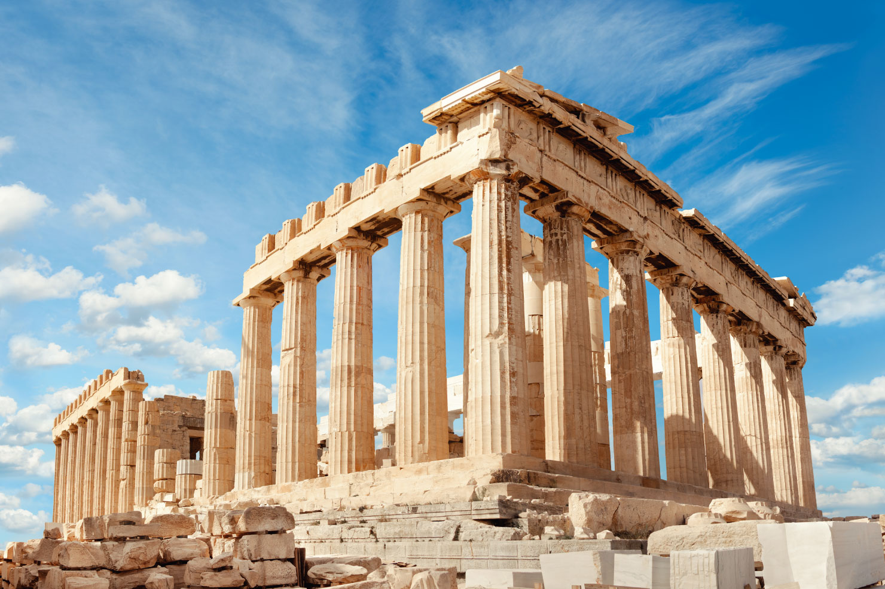

Conheça a Grécia
A Grécia, localizada no sudeste da Europa, é o berço de algumas das mais importantes contribuições da humanidade. Desde a antiguidade, com seus filósofos, poetas e a democracia. O páis combina tradições com uma vida vibrante. Hoje, suas ilhas, paisagens deslumbrantes e sua cultura continuam encantando o mundo. Conheça a Grécia e se inspire na sua riqueza e beleza única.
